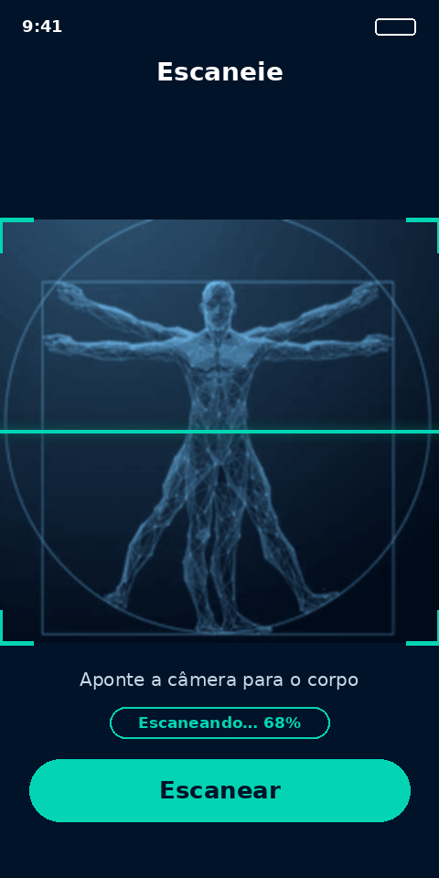
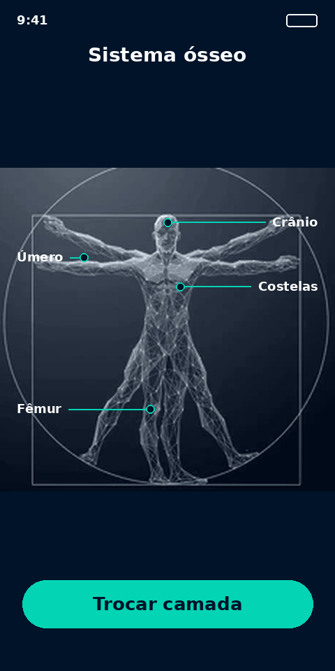
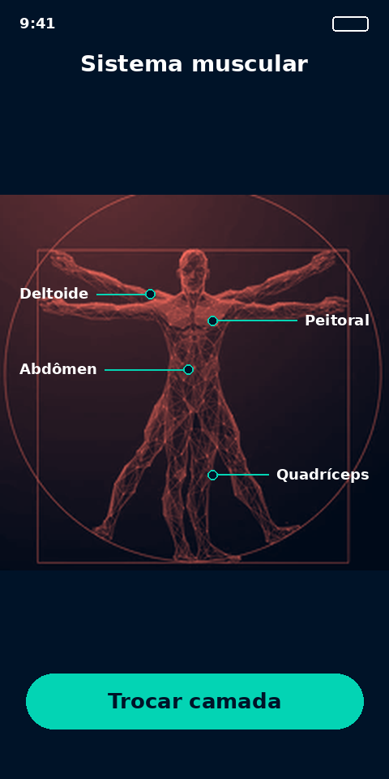
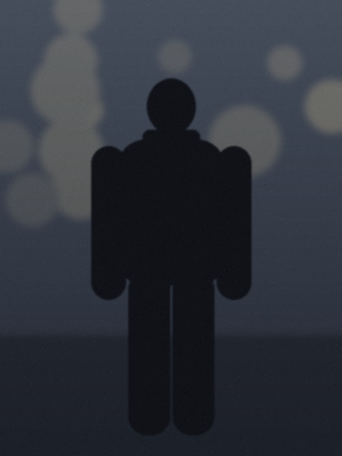
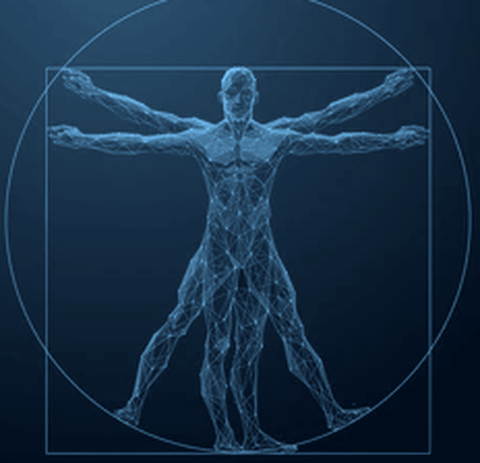
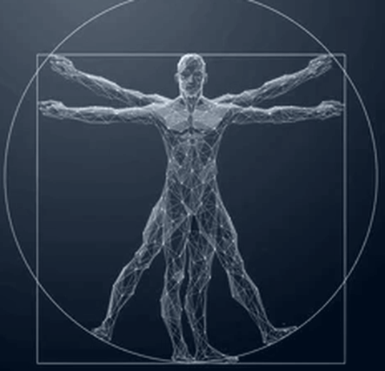
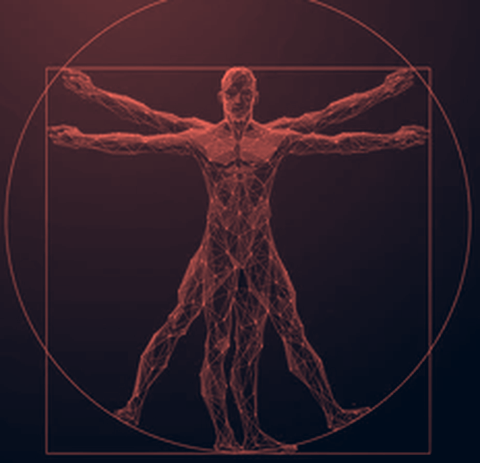
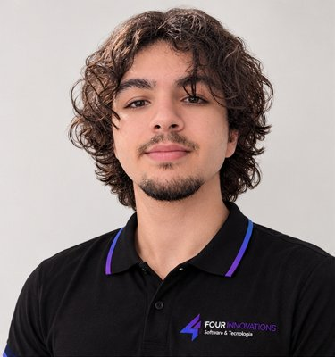
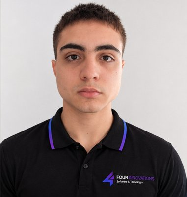

Anatomia que você enxerga na câmera
O BioLens é um app de realidade aumentada para o ensino de anatomia no ensino médio. Escaneie o corpo humano e veja ossos e músculos em camadas interativas.
Baixe para Android
Disponível paraAndroid
Sobre o app
Feito pela Four Innovations para tornar o aprendizado de anatomia mais visual, intuitivo e envolvente.


Visual
Ossos e músculos aparecem em camadas interativas, no lugar certo do corpo.
Fácil de usar
Basta apontar a câmera do celular. O aluno aprende explorando.
Feito para a sala de aula
Pensado para estudantes do ensino médio e para as aulas de anatomia.
Recursos
Tudo o que o aluno precisa para estudar o corpo humano com a câmera.
Escaneamento em AR
Escaneie o corpo humano pela câmera do celular.
Camadas interativas
Alterne entre as camadas e explore cada estrutura.
Sistema ósseo
Veja o esqueleto do tronco em realidade aumentada.
Sistema muscular
Veja a musculatura sob a pele, em destaque.
Android primeiro
Pensado para o celular Android que o aluno já tem.
Ensino médio
Conteúdo de anatomia para a idade e o ritmo da turma.
Veja como funciona
Toque nos botões do celular e simule o uso do BioLens: abra a câmera, escaneie uma pessoa e explore o corpo humano.
- Abra a câmera
- Escaneie o corpo
- Explore corpo, ossos e músculos
BioLens
Anatomia em realidade aumentada

Aponte a câmera para o corpo
Corpo humano



Corpo escaneado com sucesso.
Veja as telas do app
Deslize para o lado para ver cada etapa.
-
1. Aponte a câmera
-
2. Veja os ossos
-
3. Veja os músculos
Baixe o BioLens
Instale no seu celular Android e comece a explorar o corpo humano em realidade aumentada.
Baixar paraAndroidComo usar
- Abra o app e aponte a câmera para o corpo humano.
- Aguarde o escaneamento terminar.
- Alterne entre ossos e músculos e explore.
Nossa equipe
Quem desenvolveu o BioLens e a identidade da Four Innovations.
Italo Lopes
Estudante da Fatec Registro
Ricardo Horvath
Estudante da Fatec Registro

João Santos
Estudante da Fatec Registro

João Gonçalves
Estudante da Fatec Registro